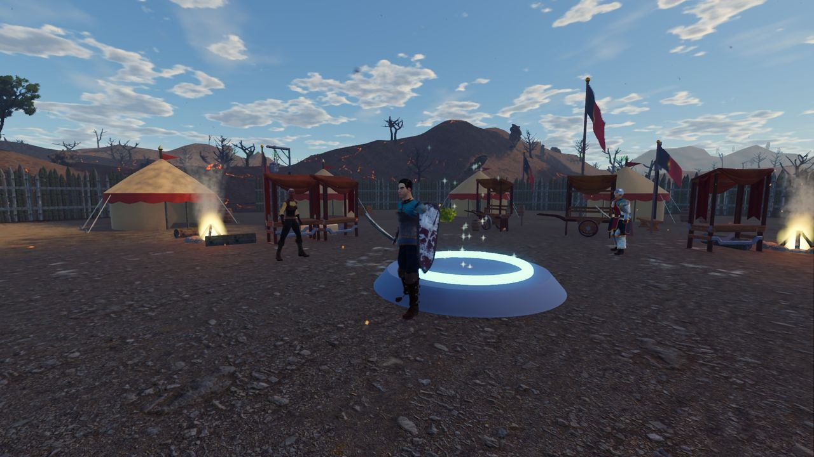

Credits and licences
Aldervast is built on the generosity of people who give their work away. Thank you.
Aldervast is an original game. Its names, places, characters and stories are its own, and no content comes from any other game. Third-party assets are released under CC0 1.0 (public domain) or, for the fonts, the SIL Open Font License 1.1. CC0 asks for nothing in return, so these credits are a courtesy.
The game runs on the Godot Engine (MIT licence, © Juan Linietsky, Ariel Manzur and contributors). Many models, such as the armour, horse, wagon, dragon, anglerfish, gates, dungeon kits and the clutter in the dungeons, are built from these sources by scripts in the project and are released as CC0 too. The interface art is the project's own: the window frames, globes, flasks, skill bar, minimap ring and journal are cut from a painted design of the screen made for the game, the skill icons are rendered by those scripts, and the minimap's map is painted from the game's world data.
| Asset | Author | Licence | Link |
|---|---|---|---|
| KayKit Character Pack: Adventurers 1.0 | Kay Lousberg | CC0 1.0 | source |
| KayKit Character Pack: Skeletons 1.0 | Kay Lousberg | CC0 1.0 | source |
| KayKit Dungeon Remastered 1.0 | Kay Lousberg | CC0 1.0 | source |
| KayKit Medieval Hexagon Pack 1.0 | Kay Lousberg | CC0 1.0 | source |
| Stylized Nature MegaKit (Standard) | Quaternius | CC0 1.0 | source |
| Fantasy Props MegaKit (Standard) | Quaternius | CC0 1.0 | source |
| Textured Stylized Trees (May 2020) | Quaternius | CC0 1.0 | source |
| Textured Cute Monster Pack (Aug 2020) | Quaternius | CC0 1.0 | source |
| LowPoly Animated Monsters | Quaternius | CC0 1.0 | source |
| Animated Animals (Vol.2) / 5 Low Poly Animals / Farm Animal Pack | Quaternius | CC0 1.0 | source source 2 source 3 |
| Poly Haven textures and models | Poly Haven contributors | CC0 1.0 | source |
| Cinzel, Alegreya Sans, Alegreya, Crimson Text (Google Fonts) | Natanael Gama (Cinzel); Huerta Tipografica (Alegreya Sans, Alegreya); Sebastian Kosch (Crimson Text) | SIL Open Font License 1.1 | source |
| 50 RPG sound effects | Kenney | CC0 1.0 | source |
| RPG Sound Pack | artisticdude | CC0 1.0 | source |
| 80 CC0 creature SFX | rubberduck | CC0 1.0 | source |
| 100 CC0 SFX | rubberduck | CC0 1.0 | source |
| Battle Theme A | cynicmusic | CC0 1.0 | source |
| Town Theme RPG | cynicmusic | CC0 1.0 | source |
| Medieval: The Old Tower Inn | RandomMind | CC0 1.0 | source |
| Medieval: The Bard's Tale | RandomMind | CC0 1.0 | source |
| The Field Of Dreams | pauliuw | CC0 1.0 | source |
| Prepare your swords | bojidar-bg (Bojidar Marinov) | CC0 1.0 | source |
| Night Prowler | section31 (Section 31 -Tech) | CC0 1.0 | source |
| Universal Base Characters (Standard) | Quaternius | CC0 1.0 | source |
| Modular Character Outfits - Fantasy (Standard) | Quaternius | CC0 1.0 | source |
| Universal Animation Library (Standard) | Quaternius | CC0 1.0 | source |
| Universal Animation Library 2 (Standard) | Quaternius | CC0 1.0 | source |
| Medieval Village MegaKit (Standard) | Quaternius | CC0 1.0 | source |
| Park ambiences | thimras | CC0 1.0 | source |
| Ambient Bird Sounds | isaiah658 | CC0 1.0 | source |
| Crickets Ambient Noise - loopable | wolfgang | CC0 1.0 | source |
| Loopable Dungeon Ambience | jaggedstone | CC0 1.0 | source |
| Fire Crackling | antumdeluge | CC0 1.0 | source |
| Beach Ocean Waves (wave 1) | jasinski (submitted by qubodup) | CC0 1.0 | source |
| Beach Ocean Waves (wave 2) | jasinski (submitted by qubodup) | CC0 1.0 | source |
| Beach Ocean Waves (wave 3) | jasinski (submitted by qubodup) | CC0 1.0 | source |
| Beach Ocean Waves (wave 4) | jasinski (submitted by qubodup) | CC0 1.0 | source |
| Water Waves | transitking (submitted by qubodup) | CC0 1.0 | source |
| Hammer on anvil | themightyglider | CC0 1.0 | source |
| Blacksmith's hammer | VishwaJai | CC0 1.0 | source |
| Aldervast project-authored | Aldervast project | CC0 1.0 (the project's own work) |
This website
Set in Cinzel by Natanael Gama, and Alegreya and Alegreya Sans by Huerta Tipográfica, the same fonts the game uses (OFL). The crystal crest, frame corners, rules and the Lattice behind the pages are drawn for this site after the game's own interface. Screenshots, clips and sounds are from the game, and the maps are the game's own painted map. The wiki is generated from the game's data files.